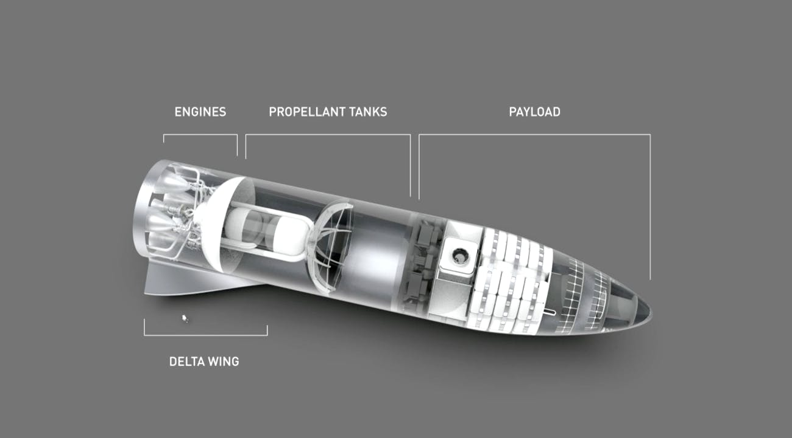
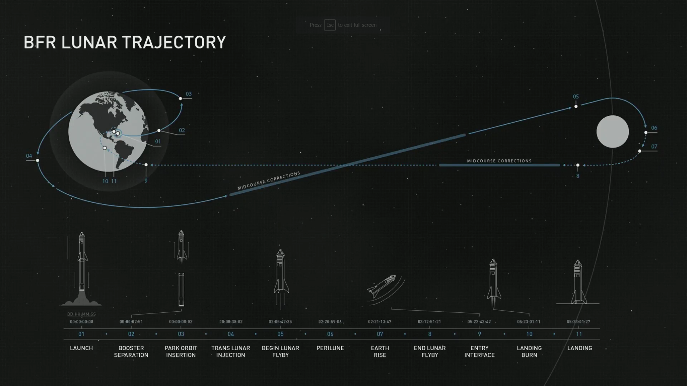
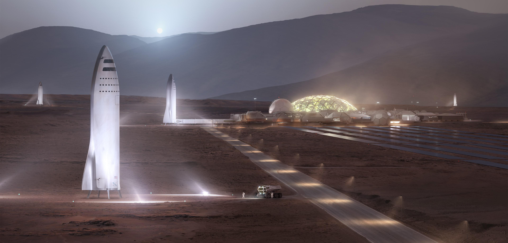

The Big Falcon Rocket (officially shortened to BFR) is a privately funded, fully reusable launch vehicle and spacecraft system in development by SpaceX. In November 2018 the second stage and ship was renamed by CEO Elon Musk to Starship, while the first stage was given the moniker "Super Heavy". SpaceX's Starship and Super Heavy Rocket represent a fully reusable transportation system designed to service all Earth orbit needs as well as the Moon and Mars. This two-stage vehicle—composed of the Super Heavy rocket (booster) and Starship (ship)—will eventually replace Falcon 9, Falcon Heavy and Dragon.
By creating a single system that can service a variety of markets, SpaceX can redirect resources from Falcon 9, Falcon Heavy and Dragon to Starship—which is fundamental in making the system affordable. The overall space vehicle architecture includes both launch vehicle and spacecraft, as well as ground infrastructure for rapid launch and relaunch, and propellant transfer in space. The payload capacity to Earth orbit is cited as being at least 100,000 kg (220,000 lb), making BFR a super heavy-lift launch vehicle. The first orbital flight will occur no earlier than 2020, with a flight around the Moon slated for 2023.
Super Heavy, the first stage, or booster, of the this next-generation launch vehicle is 63 meters (207 ft) long and 9 m (30 ft) in diameter and expected to have a gross liftoff mass of 3,065,000 kg (6,757,000 lb). It is to be constructed of stainless steel tanks and structure, holding subcooled liquid methane and liquid oxygen (CH 4/LOX) propellants, powered by 31 Raptor rocket engines providing 61.8 MN (13,900,000 lbf) total liftoff thrust. The booster is projected to return to land on the launch mount, although it might land on legs initially.
Starship is a reusable spacecraft that also serves as the launch vehicle second stage with an integrated payload section. It is planned to be built in at least three operational versions, with a number of limited-function prototype test articles will also be built. Starship will eventually be built in at least three operational versions:
An important question we have to answer is, “How do we pay for this system?” The answer lies in creating a single system that can support a variety of missions. SpaceX can then redirect resources from Falcon 9, Falcon Heavy and Dragon to this system.
SpaceX's Starship and Super Heavy rocket are designed to deliver satellites to Earth orbit and beyond, at a lower marginal cost per launch than our current Falcon vehicles. With a 9m diameter forward payload compartment, larger than any other current or planned fairing, Starship creates possibilities for new missions, including space telescopes even larger than the James Webb.
Starship can deliver both cargo and people to and from the International Space Station. Starship’s pressurized forward payload volume is greater than 1,000m3, enhancing utilization capacity for in-space activities. The aft cargo containers can also host a variety of payloads.
Building Moon bases and Mars cities will require affordable delivery of significant quantities of cargo and people. The fully reusable Starship system uses in-space propellant transfer to enable the delivery of over 100t of useful mass to the surface of the Moon or Mars. This system is designed to ultimately carry as many as 100 people on long-duration, interplanetary flights.
On September 17, 2018, SpaceX announced fashion innovator and globally recognized art curator Yusaku Maezawa will be the company’s first private passenger to fly around the Moon in 2023. To date, only 24 people have visited the Moon, with the last of them flying in 1972. This first private lunar passenger flight, featuring a fly-by of the Moon as part of a weeklong mission, will help fund development of SpaceX's Starship and Super Heavy (formerly known as BFR), an important step in enabling access for everyday people who dream of flying to space.
Our aspirational goal is to send our first cargo mission to Mars in 2022. The objectives for the first mission will be to confirm water resources, identify hazards, and put in place initial power, mining, and life support infrastructure. A second mission, with both cargo and crew, is targeted for 2024, with primary objectives of building a propellant depot and preparing for future crew flights. The ships from these initial missions will also serve as the beginnings of the first Mars base, from which we can build a thriving city and eventually a self-sustaining civilization on Mars.
